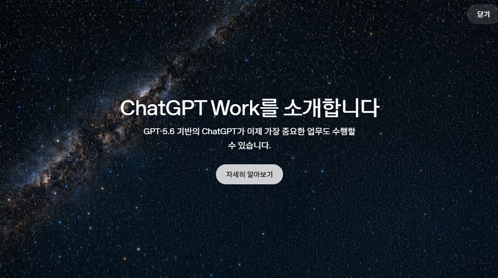
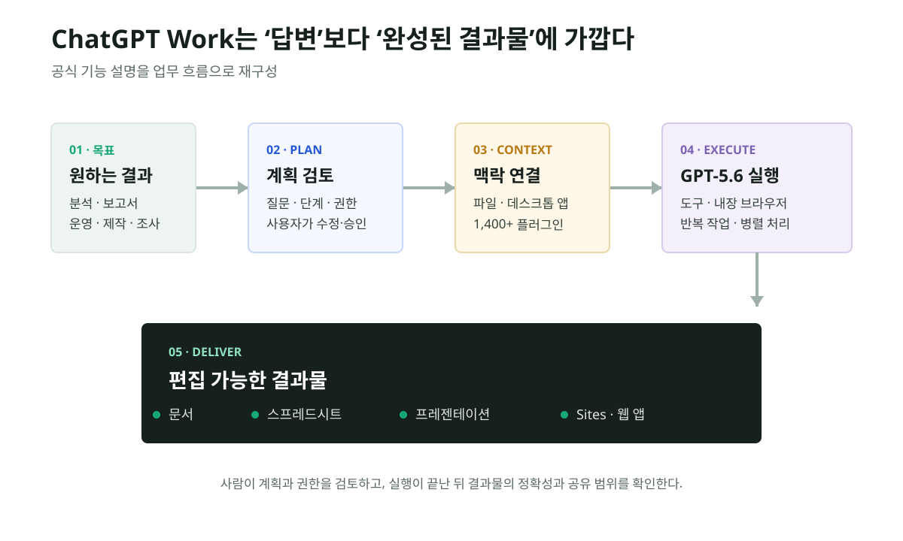
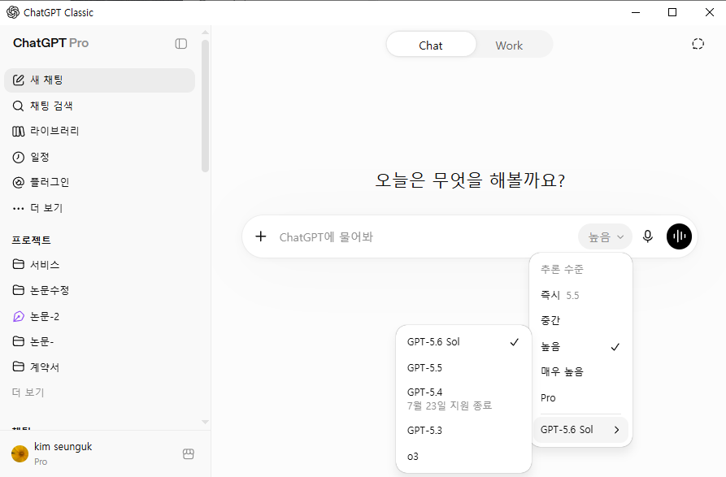
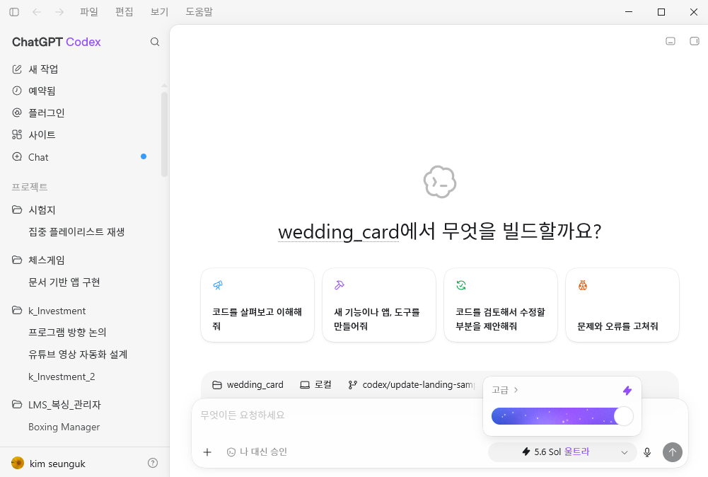

ChatGPT Work가 나왔다: 채팅창이 업무 실행 공간으로 바뀐다
ChatGPT Work는 새 모델 이름이 아니다. 목표를 받고, 필요한 파일과 앱의 맥락을 모으고, 계획을 보여준 뒤, 도구와 브라우저를 오가며 문서·표·프레젠테이션·사이트까지 완성하는 별도의 업무 모드다.

핵심 요약
질문에 답하는 Chat과, 목표를 완수하는 Work가 분리됐다
Work는 GPT-5.6을 기반으로 파일·데스크톱 앱·연결 도구에서 맥락을 수집하고, Plan 모드에서 단계와 권한을 검토받은 뒤 작업을 수행한다. 반복 작업을 예약하고, 내장 브라우저로 여러 탭을 오가며, 완성된 문서·스프레드시트·프레젠테이션·웹 앱을 만드는 것이 중심이다.
선정 이유와 발행 판단
GPT-5.6이 엔진이라면 ChatGPT Work는 그 엔진을 실제 업무에 연결하는 제품이다. 같은 날 발표됐지만 모델 성능 기사에 묻히면 사용자가 체감할 가장 큰 인터페이스 변화가 사라진다. 그래서 이 글은 GPT-5.6 분석과 분리했다.
| 항목 | 점수 | 판단 근거 |
|---|---|---|
| 영향력 | 29/30 | ChatGPT의 기본 사용 단위를 대화에서 프로젝트·결과물로 확장 |
| 일반 주요 매체 확산도 | 15/20 | Axios가 별도 기능과 배포 범위를 보도, 주요 GPT-5.6 보도에서도 함께 언급 |
| 신뢰도·출처 검증 | 20/20 | 공식 제품 페이지, 실제 국내 화면, GPT-5.6 제공 정책 일치 |
| 새로움·중복 회피 | 10/10 | Chat·Codex와 구분되는 신규 Work 표면 |
| 사용자 영향 | 10/10 | 파일, 앱, 브라우저, 반복 작업, 결과물 제작 흐름을 직접 변경 |
| 블로그 적합도 | 5/5 | Claude Cowork와의 차이를 실사용 관점에서 설명 가능 |
| 이미지·도표화 | 5/5 | 공식 기능과 실제 인터페이스를 함께 확인 가능 |
| 게이트 | 결과 | 확인 내용 |
|---|---|---|
| 원문 | 확정 | OpenAI의 한국어 ChatGPT Work 제품 페이지 확인 |
| 독립 확인 | 부분 확인 | Axios가 Work 출시와 앱·파일 기반 작업을 확인했지만, 출시 직후라 독립 심층 보도는 아직 제한적 |
| 전문매체 | 부분 확인 | 출시 직후라 Work 단독 심층 리뷰는 아직 제한적 |
| 반대 확인 | 부분 확인 | 초기 사용자의 한도·플랜 혼동은 있으나 공식 제공 정책과 충돌하는 확정 오보는 확인되지 않음 |
| 날짜 | 확정 | 공식 발표 7월 9일, 국내 실제 화면 7월 10일 |
| 수치 | 확정 | 1,400개 이상 플러그인과 배포 대상은 공식 페이지 값만 사용 |
| 이해관계 | 표시 | 기업 사례의 시간 절감·매출 효과는 고객사와 OpenAI가 제시한 사례 |
Work는 실제로 어떻게 움직이나

Work의 핵심은 컨텍스트를 한 번에 많이 넣는 것이 아니라, 작업이 진행되는 동안 필요한 맥락을 찾고 다음 행동을 정하는 데 있다. 공식 페이지는 파일과 앱을 이용한 결과물 제작, Sites 기반 웹사이트·웹 앱 생성, 1,400개 이상의 플러그인, 단발·반복 작업, 여러 탭을 지원하는 내장 브라우저를 하나의 업무 흐름으로 묶는다.
Plan 모드는 중요한 안전장치다. ChatGPT가 필요한 자료와 질문, 단계별 계획을 먼저 제시하고 사용자가 수정하거나 승인할 수 있다. “알아서 다 해줘”가 아니라, 실행 범위와 결과 형식을 시작 전에 합의하는 방식이다.
실제 화면에서는 Chat과 Work가 분리된다

이 분리는 단순한 탭 디자인이 아니다. Chat은 빠른 대화와 질의응답, Work는 파일과 도구에 권한을 주고 일정 시간 동안 프로젝트를 진행하는 경험으로 역할을 나눈다. 사용자가 긴 업무를 시킬 때 무엇이 실행되고 어디까지 접근하는지 더 명시적으로 구분할 수 있다.
Codex와 Work의 관계

둘은 완전히 같은 제품도, 완전히 무관한 제품도 아니다. Codex는 소프트웨어 개발을 위한 전문 작업 공간이고, Work는 재무·운영·마케팅·세일즈·분석 등 일반 업무까지 대상을 넓힌다. 사용자는 결과물의 종류에 따라 시작 화면을 고르게 된다.
Claude Cowork와 무엇이 같고 다른가
| 구분 | ChatGPT Work | Claude Cowork |
|---|---|---|
| 공통점 | 목표를 받고 여러 단계의 지식 업무를 실행 | 결과를 목표로 로컬 파일·앱을 오가며 작업 |
| 주요 맥락 | 파일, 데스크톱 앱, 플러그인, 내장 브라우저 | 선택한 로컬 폴더, 파일, 데스크톱 애플리케이션 |
| 결과물 | 문서, 표, 프레젠테이션, Sites 기반 웹 앱 | 정리된 파일, 문서 초안, 연구 요약, 구조화 데이터 |
| 실행 통제 | Plan 모드에서 단계와 실행 전 승인을 검토 | 사용자가 선택한 작업공간과 샌드박스 경계 안에서 실행 |
| 제품 방향 | ChatGPT·Codex·플러그인·자동화를 하나의 Work 표면으로 연결 | Claude Code의 장시간 실행 능력을 비개발 지식 업무로 확장 |
사용자가 느낀 “Claude Cowork 같은 기능”이라는 해석은 큰 방향에서 맞다. 두 제품 모두 채팅을 잘하는 AI에서, 컴퓨터와 파일을 사용해 끝까지 업무를 수행하는 AI로 이동한다. 다만 ChatGPT Work는 Sites·플러그인·예약 작업·Codex와의 연결을 전면에 내세우고, Claude Cowork는 선택한 로컬 작업공간과 가상화 기반 격리를 더 구체적으로 설명한다.
반대 해석과 주의할 점
Work가 있다고 해서 모든 작업을 맡겨도 된다는 뜻은 아니다. 파일 접근, 외부 서비스 로그인, 메일 발송, 게시, 결제처럼 결과가 되돌리기 어려운 행동은 승인 경계를 분명히 해야 한다. 연결 도구가 많아질수록 편의와 함께 데이터 노출 범위도 넓어진다.
기업 고객 사례도 그대로 일반화하면 안 된다. 몇 주가 몇 시간으로 줄었다는 사례나 파이프라인 기회가 늘었다는 수치는 특정 조직의 데이터·워크플로·검수 체계를 포함한다. Work 자체의 보편적인 생산성 향상률로 읽어서는 안 된다.
한국 독자에게 미치는 영향
한국 기업에서는 엑셀·보고서·PPT를 만드는 시간보다, 사내 파일과 SaaS를 어떤 범위로 연결할지가 먼저 쟁점이 될 수 있다. 팀 단위 도입이라면 플러그인 허용 목록, 개인정보·영업비밀의 저장 위치, 결과물 검수자, 반복 작업의 중지 조건을 함께 정해야 한다. 개인 사용자는 보고서나 웹 앱처럼 여러 도구가 필요한 프로젝트에서 Work를 쓰고, 짧은 질문은 Chat에 남기는 구분이 효율적이다.
제공 범위
공식 페이지 기준으로 macOS 데스크톱에서는 모든 플랜에 제공되며, Windows 데스크톱과 웹·모바일의 Plus, Pro, Business, Enterprise, Edu에는 며칠에 걸쳐 순차 배포된다. GPT-5.6 Terra는 Free·Go 사용자의 Work와 Codex에 제공되고, Plus 이상은 Sol·Terra·Luna를 선택할 수 있다. Ultra는 Work에서 Pro·Enterprise, Codex에서는 Plus 이상에 제공된다.
시각 자료와 저작권 판단
이 글은 사용자가 직접 제공한 공식 소개 화면과 실제 앱 화면만 해설 범위에서 사용한다. 원출처·촬영일·권리자를 캡션에 표시했고, OpenAI 페이지의 다른 영상·고객사 로고·언론사 이미지는 저장하지 않았다. 자체 흐름도는 공식 기능 설명을 토대로 직접 제작했으며 제품 화면처럼 오인되지 않도록 재구성 도표라고 밝혔다.
| 단계 | 결과 | 확인 내용 |
|---|---|---|
| 데이터 | 통과 | Plan, 파일·앱, 플러그인, 브라우저, 결과물 항목을 공식 페이지와 대조 |
| 계산 | 통과 | 계산 항목 없음, 1,400+ 플러그인 수만 공식 표기 유지 |
| 의미 | 통과 | 자동 완전 위임이 아니라 사람의 계획·권한·결과 검토를 함께 표시 |
| 시각 | 통과 | 단계 순서, 화살표, 대비, 대체텍스트, 모바일 축소 가독성 확인 |
| 출처 | 통과 | 캡션과 출처 섹션에 OpenAI 공식 페이지 및 재구성 사실 표시 |
출처와 확인 링크
이미지·표 참고 링크
발행 전 확인 포인트
순차 배포 중이므로 Windows·웹·모바일에서 Work가 아직 보이지 않을 수 있다. 계정별 모델과 Ultra 접근 조건을 공식 페이지에서 다시 확인한다. 공유·발송·결제처럼 외부 상태를 바꾸는 작업은 실행 전 승인 단계를 두고, 기업 데이터는 조직의 보안·보존 정책과 연결 도구의 권한 범위를 먼저 검토한다.